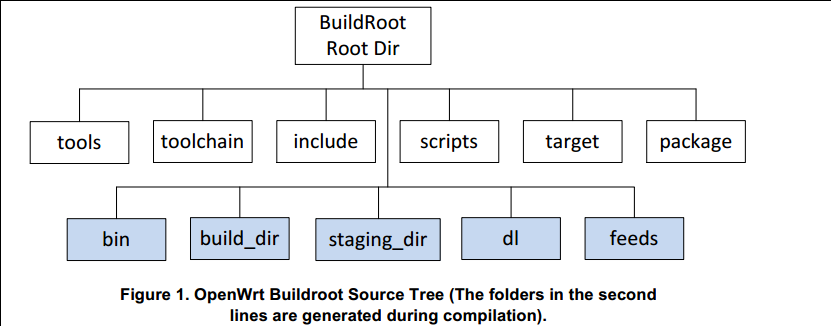

记录了OpenWrt的入门步骤和踩的一些坑。
操作系统：Ubuntu 20.04 LTS
开发板：JS9331开发板
可以先更换国内源。
安装依赖：
sudo apt-get install subversion g++ zlib1g-dev build-essential git python rsync man-db
sudo apt-get install libncurses5-dev gawk gettext unzip file libssl-dev wget zip time
git clone https://git.openwrt.org/openwrt/openwrt.git/ cd openwrt
git clone，可以访问镜像：git clone https://github.com/openwrt/openwrt.git
切换到指定的版本，首先查看可用的版本号：
git tag
切换到v17.01.7
git checkout v17.01.7
feeds切换到./scripts文件夹下：
cd scripts
./feeds update -a
./feeds install -a
feeds install使得下载的包在make menuconfig中可用。
./feeds update -a时遇到端口443拒接访问：fatal: 无法访问 'https://git.lede-project.org/feed/packages.git/'： Failed to connect to git.lede-project.org port 443: 拒绝连接
可以在根目录的feeds.conf.default中把所有的https://改为git://。
make menuconfig
如果上一步./feeds install -a正确，那menuconfig里应该会多出LuCI的选项。
在LuCI -> 1. Collections里勾选：
要添加中文支持，在LuCI -> 2. Modules -> Translation里勾选：
发现这么设置后无论是否勾选
3. Applications -> luci-app-uhttpd最终生成的固件中都会包含httpd
make
如果报错了，使用
make -j1 V=s
查看具体报错信息。
生成的.bin文件位于.bin/targets/中，对应menuconfig里面选择的target。
如果出现了各种：
check_data_file_clashes: Package libustream-openssl20150806 wants to install file /home/b/Desktop/test_openwrt/openwrt/build_dir/target-i386_pentium4_musl/root-x86/lib/libustream-ssl.so But that file is already provided by package * libustream-mbedtls20150806
可以检查menuconfig的选项，往往是配置有问题，实在不行只能删掉配置、清空文件然后重新编译。由于第一次编译时间实在是太长了，我们不喜欢这么干。
mv .config .config.bak
make clean
OpenWrt 19.07.7编译会报警告
WARNING: Makefile 'package/feeds/packages/ksmbd/Makefile' has a dependency on 'kmod-crypto-arc4', which does not exist
但是实际不影响编译和使用，原因未知。
在/etc/init.d/下的脚本在系统启动时会被调用，脚本的格式如下
假设文件为/etc/init.d/example，内容是：
#!/bin/sh /etc/rc.common # Example script START=10 STOP=15 start() { echo start # commands to launch application } stop() { echo stop # commands to kill application }
第一行指明使用/bin/sh /etc/rc.common作为脚本解释器并在执行脚本前调用main和检查脚本。
#!称作“Shebang”，用于指明执行这个脚本文件的解释器：
- 如果脚本文件中没有#!这一行，那么执行时会默认采用当前Shell去解释这个脚本(即：$SHELL环境变量）。
- 如果
#!之后的解释程序是一个可执行文件，那么执行这个脚本时，它就会把文件名及其参数一起作为参数传给那个解释程序去执行。- 如果
#!指定的解释程序没有可执行权限，则会报错bad interpreter: Permission denied。如果#!指定的解释程序不是一个可执行文件，那么指定的解释程序会被忽略，转而交给当前的SHELL去执行这个脚本。- 如果
#!指定的解释程序不存在，那么会报错bad interpreter: No such file or directory。注意：#!之后的解释程序，需要写其绝对路径（如：#!/bin/bash），它是不会自动到$PATH中寻找解释器的。- 当然，如果你使用类似于
bash test.sh这样的命令来执行脚本，那么#!这一行将会被忽略掉，解释器当然是用命令行中显式指定的bash。- 脚本文件必须拥有可执行权限。
START=10和STOP=15分别指定脚本启动时的次序，分别对应/etc/rc.d中软链接的名字，比如这里会对应/etc/rc.d/S10example和/etc/rc.d/K15example。
start()和stop()是脚本的方法，公用的 init script 方法有：
start # 启动服务 stop # 停止服务 restart # 重启服务 reload # 重新载入配置文件, 如果失败则重启 enable # 启用开机自启动, 实际上是在/etc/rc.d/下创建S??和K??开头的软链 disable # 禁用开机自启动, 实际上是删除/etc/rc.d/下对应的软链
其中start()和stop()是必须的，缺少了会导致不工作。
Procd：Openwrt的进程管理守护进程（process management daemon）,它与初始化脚本（/etc/init.d/*）保持联系，当进程相关联的配置文件更改时，会触发procd去重启或启动脚本。Procd代替了原本的Hotplug2。
主要区别是：
shebang不同：
#!/bin/sh /etc/rc.common
需要指明USE_PROCD=1：
USE_PROCD=1
主要包含start_service()和stop_service()函数
在./target/linux/<arch_name>/base-files/下的文件会包含在生成的固件中的对应位置，只要将写好的脚本置于此处，OpenWrt会在构建中（使用enable()及disable()）使其生效[3:1]，在编译后生成的固件就能自动调用启动脚本。
可能需要
chmod 777

如图，第一行是原始目录（由Git管理的 + 下载的），第二行是编译生成的目录，作用分别是：
| 目录名 | 作用 |
|---|---|
| tools | 编译时需要一些工具， tools里包含了获取和编译这些工具的命令。里面是一些Makefile，有的可能还有patch。每个Makefile里都有一句 $(eval $(call HostBuild))，表示编译这个工具是为了在主机上使用的。 |
| toolchain | 包含一些命令去获取kernel headers, C library, bin-utils, compiler, debugger |
| target | 各平台在这个目录里定义了firmware和kernel的编译过程。 |
| package | 包含针对各个软件包的Makefile。openwrt定义了一套Makefile模板，各软件参照这个模板定义了自己的信息，如软件包的版本、下载地址、编译方式、安装地址等。 |
| include | openwrt的Makefile都存放在这里。 |
| scripts | 一些perl脚本，用于软件包管理。 |
| dl | 软件包下载后都放到这个目录里 |
| build_dir | 软件包都解压到build_dir/里，然后在此编译 |
| staging_dir | 最终安装目录。tools, toolchain被安装到这里，rootfs也会放到这里。 |
| feeds | |
| bin | 编译完成之后，firmware和各ipk会放到此目录下。 |
UCI（Unified Configuration Interface）是OpenWrt中所有系统的统一配置接口，当应用提供UCI接口时，用户只需通过UCI配置文件进行配置，而不用处理各应用各不相同的分散的配置文件。UCI配置文件位于/etc/config/下，用户通过文本编辑器直接编辑，或者使用C/Lua/Shell的UCI工具配置，之后执行/etc/init.d/下的对应脚本即可完成一个配置。
比如Samba/CIFS程序，其原配置文件是在/etc/samba/smb.conf，而对应的UCI文件是/etc/config/samba，当/etc/config/samba文件被修改了之后，需要运行一次
/etc/init.d/samba start
以/etc/config/network为例，其原内容为：
config interface 'loopback' option ifname 'lo' option proto 'static' option ipaddr '127.0.0.1' option netmask '255.0.0.0' config globals 'globals' option ula_prefix 'fd89:5984:253b::/48' config interface 'lan' option type 'bridge' option ifname 'eth1' option proto 'static' option ipaddr '192.168.1.1' option netmask '255.255.255.0' option ip6assign '60' config interface 'wan' option ifname 'eth0' option proto 'dhcp' config interface 'wan6' option ifname 'eth0' option proto 'dhcpv6'
可以发现一个config文件由若干个section组成，每个section又含有若干不同值的option。
大致结构为：
如果我们想要添加的内容是：
config route 'custom_static_route' option target '1.1.1.1' option gateway '1.1.1.1' option interface 'lan'
可以使用
uci set network.custom_static_route=route uci set network.custom_static_route.target=1.1.1.1 uci set network.custom_static_route.gateway=1.1.1.1 uci set network.custom_static_route.interface=lan uci commit
所有uci set和uci add只会暂存更改，使用uci commit后才会正式提交到UCI文件中。特别注意，当创建section和创建option时参数的含义不同：
通过LuCI页面创建的section往往无命名，在UCI文件里会形如：
config route option target '1.1.1.1' option gateway '1.1.1.1' option interface 'lan' config route option target '2.2.2.2' option gateway '2.2.2.2' option interface 'lan'这个时候得用list方式分别访问这两个section，
uci show network得到的相关部分内容会是：network.@route[0]=route network.@route[0].target='1.1.1.1' network.@route[0].gateway='1.1.1.1' network.@route[0].interface='lan' network.@route[1]=route network.@route[1].target='2.2.2.2' network.@route[1].gateway='2.2.2.2' network.@route[1].interface='lan'这里的
@foo[i]是访问list形式的section或者option的方法。
UCI（Unified Configuration Interface）是OpenWrt中所有系统的统一配置接口，LuCI（Lua Configuration Interface）是使用LuCI开发的供用户使用的一套配置界面
根据官方文档[6]，LuCI的开发方式主要有两种:
前者即直接在烧写好了OpenWrt的板上进行代码编写，写完刷新一下即可在网页看到效果。
凡是修改
controller/文件夹中的配置，都需要重启板子或把/tmp/目录下luci-indexcache、luci-modulecache/luci-sessions/删除才能生效，其他几个文件夹修改可不用，刷新一下网页即可。
后者是在LuCI的git仓库中进行代码编写，写完需要编译固件并烧写到板上才能看到效果。
两种开发方法大同小异，各有优劣。本文推荐的方法是先在本地按项目结构开发，需要预览的时候通过SCP直接拷入板内即可。直接板上开发过于麻烦。
在luci目录的application文件夹下新建如下结构：
特别注意要确保行尾符是LF，如果是在windows下开发，推荐用vscode选择行尾符为LF。
new_tab.lua的内容为：
module("luci.controller.myapp.new_tab", package.seeall) function index() entry({"admin", "new_tab"}, firstchild(), translate("cfg"), 1).dependent=false) entry({"admin", "new_tab", "sn"}, cbi("myapp-mymodule/gateway_sn"), translate("sn"), 2) entry({"admin", "new_tab", "hellworld"}, template("myapp-mymodule/helloworld"), _("HelloWorld"), 3) end
gateway_sn.lua的内容为：
m = Map("sn_file", translate("产品序列号")) -- cbi_file is the config file in /etc/config d = m:section(TypedSection, "gateway_sn") -- info is the section called info in cbi_file a = d:option(Value, "sn", translate("序列号")); a.optional=false; a.rmempty = false; -- name is the option in the cbi_file return m
helloworld.htm的内容为：
<%+header%> <h1><%: HelloWorld %></h1> <%+footer%>
整个目录内的内容拷贝到板上/usr/lib/lua/luci，reboot后重新进入LuCI即可看到效果。
LuCI使用dispatching tree加载每个controller中的index()函数。LuCI页面整个呈一个树形结构，使用luci.dispatcher中entry()来进行注册：
entry(path, target, title=nil, order=nil)
path: path描述了dispatching tree中自身的位置，比如网页中的/cgi-bin/luci/foo/bar/baz在register时写foo.bar.baz。
target: 有三类，call、template和cbi：
| 目录名 | 作用 |
|---|---|
| applications | 针对其他模块或者应用的单独的一个应用或者插件，可理解为功能模块 |
| i18n | 国际化 |
| modules | 应用集 ？包含主要的用户文件、核心文件 |
| theme | 主题 |
| build | 编译过程的脚本 |
| host | 编译产生的：将语言打包为二进制格式 |
| contrib | / |
| ipkg-ramips_24kec | 编译产生的：封装make menuconfig阶段选中的页面和功能 |
| libs | 独立的库函数：控件、接口、cbi.js、 |
| po | 语言文件 |
modules下的luci-base和luci-mod-admin-full包含了网页的基本功能。
| 文件/目录名 | 子目录名 | 作用 |
|---|---|---|
| htdocs | / | html+docs，此目录存放HTML相关文件，主要包含以下两个目录，当烧录到硬件设备后，将拷贝到/www根目录下 |
| / | cgi-bin | 存放luci启动脚本 |
| / | luci-static | 存放HTML相关文件，包含CSS、JS及网页图片等文件 |
| luasrc | / | lua+src，此目录存放系统功能的LUA文件及M（model）、V（view）、C（controller）文件夹，当烧录到硬件设备后，将拷贝到/usr/lib/lua/luci目录下 |
| / | controller | 控制器，生成页面的菜单栏并定义各个页面的调用方法 |
| / | model | 数据模型，根据底层UCI配置文件生成页面 |
| / | view | 视图，HTML页面 |
| po | / | 定义页面的语言风格 |
| root | / | 存放配置文件，该目录下的所有文件将拷贝到硬件设备根目录下 |
| src | / | 生成所需要的库文件及LUA脚本 |
| Makefile | / | 定义模块的编译方法 |
/www下| 文件/目录名 | 作用 |
|---|---|
| cgi-bin | 此文件从luci-base下拷贝过来的，存放luci启动脚本 |
| index.html | http请求的主页面，默认是/www/index.html，这个文件里显示了登录时常看见的那句话“LuCI - Lua Configuration Interface”，同时也指定了href链接/cgi-bin/luci |
| luci-static | 存放HTML相关文件，包含CSS、JS及网页图片等文件。不同主题的htdocs/luci-static都将拷贝到这个目录下 |
/usr/lib/lua下顾名思义，存放了与LUA相关的文件，在LUA脚本中，通过require命令引用的脚本及函数，起始路径都是该目录。同时，不同模型及主题的luasrc文件夹都拷贝到/usr/lib/lua/luci目录下，通过/etc/config/luci中的mediaurlbase字段决定当前使用的主题及语言。
执行
make menuconfig
Target System选择x86，Subtarget选择x86_64，Target Profile默认为Generic。
在Target Images中勾选Build Vmware image files (VMDK)，这样会生成.vmdk格式的镜像，可以直接供VMware使用。
在LuCI -> 1. Collections里勾选luci和luci-ssl-openssl，之后
make
之后生成的固件在./bin/targets/x86/64下，文件名如openwrt-x86-64-combined-ext4.vmdk。
本文使用的VMware版本为VMware Workstation Pro 15，下面记录在虚拟机中安装上文编译的OpenWrt镜像的步骤。
打开文件 -> 新建虚拟机
选择自定义（高级）
硬件兼容性可以保留默认Workstation 15.x
选择稍后安装操作系统
客户机操作系统：
选择Linux；由于我编译的OpenWrt中内核源码版本为4.14，故版本选择其他Linux 4.x 64位
设置名称和路径、处理器数量、内存大小等，合适即可
网络连接、I/O控制器类型、虚拟磁盘类型可以选择默认值
磁盘选择使用现有虚拟磁盘，选择上一步编译生成的.vmdk文件
如果弹出将现有虚拟磁盘转换为更新的格式？，可以选择转换
配置网卡，选择自定义硬件：
OpenWrt需要一个WAN口和一个LAN口，所以至少需要两个网络适配器，其中用于WAN口的选择桥接模式，用于LAN口的可以选择自定义中任意一个未被使用的虚拟网络。我使用的配置是：
| 设备 | 摘要 |
|---|---|
| 网络适配器 | 自定义（VMnet2） |
| 网络适配器2 | 桥接模式（自动） |
至此虚拟机建立完成，启动虚拟机
设置网络参数：
进入OpenWrt系统，敲一下回车进入命令行，然后修改网络配置文件：
vim /etc/config/network
主要是保证'lan'和'wan'这两个配置没问题，这里需要打开VMWare中编辑 -> 虚拟网络编辑器查看VMnet的网段。
这里我的VMnet2的子网地址是192.168.233.0，并且我的宿主机为192.168.233.1，因此只需要将'lan'下的option ipaddr修改到同一网段下的另一个IP即可。
wan我这里保持的默认dhcp没有出现问题。
给出一个我的参考：
config interface 'lan' option type 'bridge' option ifname 'eth0' option proto 'static' option ipaddr '192.168.233.10' option netmask '255.255.255.0' option ip6assign '60' config interface 'wan' option ifname 'eth1' option proto 'dhcp'
之后使用
service network restart
如果WAN口配置没有问题，那在OpenWrt虚拟机中应该可以直接ping通外网，如
ping www.baidu.com
如果LAN口没有问题，那宿主机和OpenWrt应该可以互相ping通，比如在宿主机ping虚拟机：
ping 192.168.233.10
由于高版本的gnulib与低版本不兼容的问题，在高版本Ubuntu下编译一个依赖低版本gnulib的OpenWrt版本可能会遇到freadahead.c，fseterr.c相关的报错问题，比如：
freadahead.c:91:3: error: #error "Please port gnulib freadahead.c to your platform! Look at the definition of fflush, fread, ungetc on your system, then report this to bug-gnulib."
解决方法是降低本系统内gnuilb版本，或者手动修改受影响的源代码，或者直接换一个旧版本Ubuntu。百度的方法绝大多数都如这种：
cd /opt/p2/openwrt/build_dir/host/m4-1.4.17/ sed -i 's/IO_ftrylockfile/IO_EOF_SEEN/' lib/*.c echo "#define _IO_IN_BACKUP 0x100" >> lib/stdio-impl.h
是直接修改了受影响的代码。但是这些都很麻烦，受影响的地方多且琐碎，如果我们仍想用高版本的Ubuntu如20.04，可以使用docker来进行编译，使用一个Ubuntu 16.04的docker镜像就可以了。
Docker本身是跨平台的，在Windows或者Mac OS上运行docker需要安装Docker Desktop，大体上Docker Desktop运行了一个Linux虚拟机，在虚拟机中再运行docker。本文是在Ubuntu 20.04下安装Docker Engine的流程[8]。
首先移除系统中可能存在的旧版本docker：
sudo apt-get remove docker docker-engine docker.io containerd runc
添加docker源，先安装让apt可以用HTTPS源的依赖：
sudo apt-get update sudo apt-get install \ apt-transport-https \ ca-certificates \ curl \ gnupg \ lsb-release
添加docker官方的GPG key：
curl -fsSL https://download.docker.com/linux/ubuntu/gpg | sudo gpg --dearmor -o /usr/share/keyrings/docker-archive-keyring.gpg
设置稳定版的源：
echo \ "deb [arch=$(dpkg --print-architecture) signed-by=/usr/share/keyrings/docker-archive-keyring.gpg] https://download.docker.com/linux/ubuntu \ $(lsb_release -cs) stable" | sudo tee /etc/apt/sources.list.d/docker.list > /dev/null
安装Docker Engine：
sudo apt-get update sudo apt-get install docker-ce docker-ce-cli containerd.io
如果安装没有问题，可以用docker run hello-world进行验证，会自动从Docker Hub上拉取hello-world镜像并且运行。
拉取一个Ubuntu 16.04的镜像：
sudo docker pull ubuntu:16.04
以交互式方式运行容器：
sudo docker run -ti ubuntu:16.04
由于国内网络问题，可以给apt换源，首先安装vim：
apt update apt install vim
备份和修改sources.list：
cd /etc/apt cp sources.list sources.list.bak rm sources.list vim sources.list
sources.list中的内容写为如下，这里使用的是阿里云的源：
deb http://mirrors.aliyun.com/ubuntu/ xenial main deb-src http://mirrors.aliyun.com/ubuntu/ xenial main deb http://mirrors.aliyun.com/ubuntu/ xenial-updates main deb-src http://mirrors.aliyun.com/ubuntu/ xenial-updates main deb http://mirrors.aliyun.com/ubuntu/ xenial universe deb-src http://mirrors.aliyun.com/ubuntu/ xenial universe deb http://mirrors.aliyun.com/ubuntu/ xenial-updates universe deb-src http://mirrors.aliyun.com/ubuntu/ xenial-updates universe deb http://mirrors.aliyun.com/ubuntu/ xenial-security main deb-src http://mirrors.aliyun.com/ubuntu/ xenial-security main deb http://mirrors.aliyun.com/ubuntu/ xenial-security universe deb-src http://mirrors.aliyun.com/ubuntu/ xenial-security universe
安装OpenWrt的依赖：
apt update apt install subversion g++ zlib1g-dev build-essential git python rsync man-db apt install libncurses5-dev gawk gettext unzip file libssl-dev wget zip time
缩减体积，然后退出：
apt clean exit
接下来将刚才所做的修改保存为新的镜像，首先查看运行的容器
sudo docker ps -l
内容大致如：
CONTAINER ID IMAGE COMMAND CREATED STATUS PORTS NAMES 2116d340b12f ubuntu:16.04 "/bin/bash" 11 minutes ago Exited (0) 40 seconds ago wizardly_elbakyan
将对应的CONTAINER ID保存为镜像：
sudo docker commit 2116d340b12f ubuntu-16.04-openwrt
使用以下命令可以查看已有的镜像：
sudo docket images
运行容器，并使用-v将本机上的OpenWrt目录（/home/openwrt）挂载到容器中（/openwrt）：
sudo docker run -ti -v /home/openwrt:/openwrt ubuntu-16.04-openwrt
切换到目录下并编译：
cd /openwrt make
因为容器中默认是以root用户进行操作的，有可能会遇到OpenWrt不允许root编译的报错：
you should not run configure as root (set FORCE_UNSAFE_CONFIGURE=1 in environment to bypass this
按照提示配置一下环境变量即可：
export FORCE_UNSAFE_CONFIGURE=1